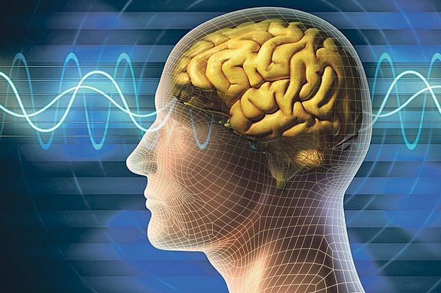

Что необходимо для дальнейшего развития медицины?

«Человек смертен, самое неприятное, что он внезапно смертен...»
Медицина, получившая своё первоначальное развитие на эмпирической основе, в настоящее время сложилась как комплексная наука, в которой уживаются рациональные и иррациональные научные представления о человеке как о предмете исследований.
Для дальнейшего развития медицины необходим общий подход, который объединил бы на междисциплинарной основе все научные направления от профилактики до лечения, что потребует коренной перестройки представлений о человеке и его вечной связи с внешним информационным полем, или Пространством Разума.
Живая природа
В настоящей статье рассматриваются универсальные свойства открытых систем (человека), в процессе эволюции которых происходит обмен энергией и информацией с окружающей внешней средой, эффекты самоорганизации диссипативных структур, их фрактальное подобие, а также особенности критических явлений, характерных для живой и неживой природы. Следует помнить, что, по словам Создателя, «каждый человек генерирует динамическое или детерминированное энергетическое (информационное) поле» (Откровение, том 5, стр. 198).
Человек, как открытая система, рассматривается с позиций синергетики как диссипативная система, характеризующаяся спонтанной перестройкой своего клеточного пространства в процессе внешнего информационного воздействия не только человеческого общества, но и Космического Пространства. Смерть человека (точка невозврата) рассматривается как неравновесный фазовый переход упорядоченной структуры в квазиаморфную.
Необходимо напомнить, что синергетика как наука получила своё название от греческого слова «синергос», означающего сотрудничество, кооперацию или коллективные действия. Процессы самоорганизации, устойчивости и распада различных структур в системах, далёких от равновесия, или Гармонии, являются общими для, повторяю, живой и неживой природы. Движущей силой явления самоорганизации является стремление открытых систем (человека) при нестационарных, непредсказуемых процессах к снижению производства энтропии. Объединение подходов синергетики с теорией фракталов позволяет приблизить решение наиболее актуальных задач по установлению связи микро– и макроинформации в человеке и, как следствие, с его здоровьем и долгожительством.
Прогнозировать и использовать
Можно предположить, что представления о фракталах (фрактальном строении Мира и «философии Фрактальной геометрии», Откровение, книга, 5, стр.197) в сочетании с подходами синергетики являются основой Новых энергоинформационных представлений о человеке и медицине, учитывающих дискретность окружающей среды. Развитие этих представлений должно позволить:
- Прогнозировать сроки жизни человека (точку невозврата (бифуркации)) в сложных условиях информационного воздействия, на базе постоянного мониторинга корреляции встречных потоков внутренней и внешней информации.
- Эффективно использовать мониторинг перераспределения информационных потоков для обеспечения активизации жизнедеятельности человека и, как следствие, принудительного омоложения.
В настоящее время всё большее признание получает концепция о размытости границ между живым и неживым, так как многообразие форм самоорганизации материи содержит относительно устойчивые образования, которые трудно отнести только к живой или только к неживой материи. В данном случае говорится, что имеет место единство случайного и детерминированного, что характерно для всех открытых систем «живой (человек) – неживая природа»! Важно, что синергетическим системам присущ метаболизм – обмен энергией и информацией с окружающей средой. Этот феномен обусловлен стремлением системы (человека) максимально использовать энергию внешней среды как способ уменьшения локальной энтропии.
Космос в помощь
В настоящее время синергетика объединила физику диссипативных систем с биологией, что позволило понять суть биологического упорядочения организма человека. Возникает вопрос, чем же отличается живой организм от кристалла? Шредингер назвал живой организм апериодическим кристаллом, так как он состоит из большего числа атомов. Принципиальное различие между живым и неживым заключается в том, что организм упорядочен как диссипативная структура, далёкая от равновесия, а кристалл упорядочен равновесно.
Следует отметить, что человеческое общество (человечество) как система динамического хаоса обладает замечательным фактором открытости внешнему Миру, или Космическому Пространству! В этом режиме человечество (человек) обнажено и беззащитно по отношению к любым, сколь угодно малым, внешним воздействиям (КОСМОСА)! Поэтому, если и говорить о болезнях и преждевременном достижении точки невозврата (точки бифуркации, переводящей человека в иное состояние), то приходится признать, что все искажения в организме человека связаны только с искажённой информацией, а значит, лечение (а точнее, профилактика) может быть осуществлено тоже информацией, и другого рецепта для человечества предложить невозможно!
По словам Создателя, «свободный в своём выборе человек... сам является гибкой динамической (энергетической) системой, способной реагировать на самые малые возмущения Пространства» (Откровения, книга 5, стр. 198).
Кстати
Основные особенности энергоинформационной (термоэмиссионной) модели разрушения биологических объектов сводятся к следующему:
Соединение континуального и атомистического подходов в рамках одной модели позволяет проследить тонкие детали накопления информационных повреждений на микроуровне (межклеточном пространстве) и определить особенности динамики накопления остаточных искажений (повреждений), характеризующие размер зоны первичного клеточного (незаживляемого) искажения.
Локальное тепловыделение в момент разрыва межклеточных связей представляет собой, совместно с теплопроводностью, главное управляющее звено в энергоинформационной (термоэмиссионной) модели, описывающей влияние во времени информации на состояние биологического объекта (клетки человека).
Учёт механизма релаксации негативной информации в биологическом объекте, находящемся под воздействием внешнего информационного поля, позволяет в предлагаемой модели рассмотреть условия тепловых флуктуаций и появление «тепловых» механизмов накопления повреждения до критической величины - формирования патологии.
Сверхсложные системы
Биологическая Система (человечество) вступает в диалог с Вселенной, ощущая себя его частью и Великим ПОДОБИЕМ! Именно в Хаосе (хаотической эволюционной фазе) возможно восприятие, получение информации из Целостного источника (Высшего Космического Разума), синхронизация и Гармонизация системы (человечества) в согласии с космическими принципами, или Канонами Мироздания. В этом, наряду с внутренними источниками, и кроется креативное, творческое начало Хаоса (человека), называемое коммуникативной функцией Хаоса. Очень важно понимать, что в этих условиях система (человечество) постоянно измеряет саму себя, порождая новую информацию, когда переменные становятся параметрами порядка Нового гомеостаза, формирующими из Хаоса параметры порядка, посредством которого реализуется эволюция Со–Знания, а значит, отбор, совершенствование, принятие (упаковка и сжатие) внешней и внутренней информации.
Сегодня фундаментальная наука всё больше внимания уделяет сверхсложным системам, живым, человекомерным, поскольку уровень субъядерного мира уходит за горизонт экспериментальной проверяемости различных гипотез, заставляя её пересматривать свои идеалы, нормы и ценности, технологии научного познания и взаимодействия науки с обществом (человеком).
Классическая парадигма, на которую согласен научный мир, может быть представлена следующим соотношением: человек (Субъект) задаёт вопрос природе (Объекту), природа отвечает:
Субъект – Средства – Объект
В фокусе рассмотрения предполагается только Объект. В философском плане эти взгляды восходят к декартовскому трансцендентальному Субъекту (человеку), постигающему абсолютные истины.
Неклассическая парадигма: человек задаёт вопрос Природе, Природа отвечает, но ответ зависит и от свойств изучаемого Объекта, и от способа вопрошания и контекста вопроса.
Проблема внезапной смерти (достижение точки невозврата) биологического объекта (человека), как и проблема внезапного разрушения технического объекта, являются предметом интенсивных научных исследований вот уже не одно столетие. Она привлекает внимание учёных не столько своей фундаментальностью, сколько практической важностью. Основы теории разрушения твёрдых тел были заложены в 20–х годах прошлого века трудами физика Гриффитса, в которых с позиции механики сплошных сред было впервые предложено объяснение явления распространения трещины в твёрдом теле.
Главное достижение Гриффитса как основателя теории разрушения твёрдых тел состоит в том, что при исследовании изменения энергии тела с увеличением длины трещины был предложен термодинамический критерий разрушения: распространение трещины (разрушения) возможно только тогда, когда общая энергия системы в результате такого роста будет уменьшаться.
Энергетический подход позволил ему получить необходимый критерий разрушения, не интересуясь деталями процесса разрушения у вершины трещины. Однако именно эта область и протекающие в ней процессы оказываются определяющими в формировании полной картины разрушения, а значит, и получения достаточного условия распространения трещины.
Научный опыт
В трудах Дагдайла, Баренблата, Билби, Маслова и Градова и других авторов теория получила значительное развитие и способность правильно описывать многие экспериментально наблюдаемые явления. В работах была разработана, с учётом временного фактора, и кинетическая теория разрушения твёрдых тел. Из многих гипотез, привлекающихся для объяснения явления разрушения, в настоящее время сохранили свои позиции только две, выдвинутые соответственно Маргетройдом и Понселе. Первый механизм связывает зависимость прочности от времени и температуры с деформационными и релаксационными процессами, приводящими к постепенному увеличению локальных напряжений до критической величины. Другая концепция предполагает основным термоактивированный механизм разрыва межмолекулярных связей, при котором флуктуационное поведение удерживающих сил обеспечивает возникновение временных эффектов в разрушении неживой материи.
По существу, оба указанных механизма разрушения являются термофлуктуационными, базируясь на общей платформе случайного характера основных процессов, протекающих в напряжённом материале. Большое развитие термофлуктуационный подход получил в работах Журкова, Маслова и Градова.
Как указывалось выше, изучение процессов диссипации энергии в момент разрушения биологического объекта (клетки крови) позволило нам предложить гипотезу, объясняющую термоактивированный характер разрушения не только отдельной клетки, но и органа, ибо повышение температуры в локальной области и увеличение локальных искажений (повышение напряжений) приводит к формированию и развитию заболевания. Не следует забывать, что на биологический объект (человека) первостепенное влияние оказывает не только внешняя информация, но и реакция организма (внутренние напряжения) на это внешнее воздействие, в соответствии с Каноном причины и следствия.
Положительная информация
Поэтому под понятием «напряжение» мы подразумеваем информацию, несущую в себе положительное или отрицательное значение для человека. Более того, проживая жизнь, человек, как правило, испытывает не только разовое информационное воздействие, но и циклическое воздействие на протяжении всей своей жизни. Всё это вместе с процессами внешнего воздействия, накопления остаточных искажений (в Душе человека) и процессов релаксации напряжений и составляет основу активной человеческой жизни, которая зависит от реакции организма на внешнюю информационную среду.
Принимаем в качестве основной гипотезы энергоинформационной модели активации человека (клетки крови – эритроцита) следующее: в процессе информационного воздействия на человека внутри его (в клетке) происходит перераспределение энергии (информации), и тогда количественные характеристики изменения энергии (информации) являются результатом ответной реакции на внешнюю информацию (воздействие) Пространства, и это может быть использовано в качестве обратной связи, направленной на корректировку уже информационного поля человека (клетки) для достижения корреляции человека с внешним информационным пространством:
Объект–Субъект–Средства–Объект–Субъект
или
Информация–Клетка–Энергия–Информация–Клетка.
Поэтому, разрабатывая расчётную модель поведения человека в информационном поле, мы предполагали получить возможность определения срока жизни, тем не менее понимая, что невозможно говорить о болезнях и преждевременном старении, переводящих человека в иное состояние, ибо все патологии в организме человека связаны только с искажённой информацией, а значит, лечение может быть осуществлено тоже только информацией.
Позитивный расчёт
Рассмотрим основные соотношения расчётной модели поведения человека (достижение точки невозврата) в информационном поле внешней среды.
Особенности данной энергоинформационной модели проанализируем на простейшем примере биологического объекта (клетки крови – эритроците), когда внешнее воздействие (информация) σ_0 (t) лежит в одной плоскости, и их зависимость от времени определяется внешними информационными условиями, связанными со скоростью изменения внешних нагрузок (информации). Задача заключается в определении пространственного распределения и динамики изменения напряжений (информации) в области клетки.
В соответствии с представлениями о термофлуктуационной релаксации напряжений (информации) в этой области может быть представлено в виде произведения двух сомножителей, один из которых зависит только от времени и связан с указанной релаксацией, а другой описывает его пространственное распределение:
σ((r,) →t) = σ_s (r →,t)∙F(t),
где σ_s (r →,t) – квазистационарная часть напряжения (информации), описывающая его пространственное распределение;
F(t) – множитель, описывающий микрорелаксацию напряжения (негативной информации) и имеющий разное аналитическое представление в известных моделях.
Принципиальным фактором является то, что в ограниченной клеточной области (начала искажения или заболевания) значительную роль играет КОМПЛЕМЕНТАРНОСТЬ клеток и силы межклеточного взаимодействия, препятствующие разрыву тканей в местах информационных искажений. Учёт комплементарности, или межклеточного взаимодействия, позволяет определить начальную зону клеточных повреждений в организме (теле) человека. Отметим, что важнейшую роль играют силы межклеточного взаимодействия, препятствующие разрушению ткани.
В свою очередь, учёт действия сил межклеточного взаимодействия позволяет рассчитать размеры и форму повреждения у точки невозврата, или концентратора информационного воздействия. Информационное воздействие (напряжение σ_4х), согласно расчётам в области r→0, представляется убывающей функцией и на больших расстояниях от зоны паталогии стремится к бесконечности.
Точные выводы
Таким образом, вычисление пространственного распределения напряжений, проводимое в рамках энергоинформационной модели, с привлечением молекулярных и атомистических представлений, приводит к выводу о возможном существовании (под давлением негативной информации) области, где напряжение искажений имеет максимальное значение.
К сожалению, пока не удаётся описать точное аналитическое выражение состояния биологического объекта (человека) под воздействием негативной информации, поэтому можно идти к результату путём введения упрощающих положений и условий.
В рамках данной энергоинформационной модели разрушения биологического объекта рассматриваются два случая: первый, когда внешнее напряжение (внешняя негативная информация) достигает того значения, при котором происходит разрыв межклеточных связей, существенно не меняясь во времени, и другой случай, когда внешнее напряжение постоянно и меньше предельного значения, а разрушение биологического объекта происходит вследствие термофлуктуационных процессов, по своей сути более близким к многократным (циклическим) нагрузкам, приводящим к физической усталости.
Леонид МАСЛОВ, д.т.н., профессор,
академик АТН РФ и РАЕН,
Генеральный директор Холдинга «НИИ Здоровьесберегающие технологии»